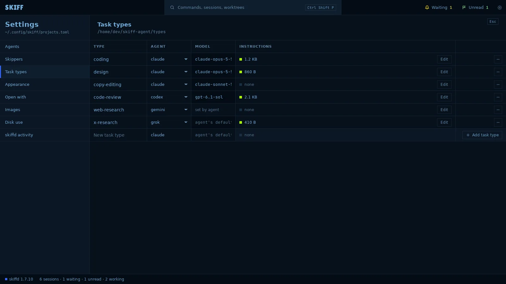

Skiff
SkiffSet up Admiral, Skippers and task types
Admiral is the Skiff agent: one agent session in a folder of its own. It sends tasks to sessions in your projects, follows them, and reports back. A project or a fleet can have a Skipper of its own. This chapter sets them up before the first start.
Open Settings
- Click the gear at the right of the top bar, or press Ctrl+Shift+,.
- Click a section in the list on the left. Ctrl+Shift+Up and Ctrl+Shift+Down step through the sections.
- Press Esc to close Settings.
Every setting goes to one file, projects.toml. Its path shows under the Settings title.
Set Admiral
- Open Settings › Skippers.
- Folder shows where Admiral works. The default is skiff-agent in your home folder. To use another folder, click Change…. Skiff shows what the change does before it does it.
- Main is Admiral's name. Leave it empty to keep Admiral, or type another name. The name shows on the row at the top of the side panel.
- Agent picks the agent Admiral runs, from the agents that are on in Settings › Agents. The field beside it takes a model name. Leave it empty for the agent's default. A change applies at the next start.
- Continue on restore shows the line the agent gets after a restart of skiffd. Turn the switch on to continue the last conversation. Turn it off to start a new one.

Set the Skippers
A project Skipper runs in one project. A fleet Skipper runs in every project of a fleet. Both take their name and agent from the same page.
- In Settings › Skippers, Project/Fleet is the word every project and fleet Skipper uses. The default is Skipper. A project session is named atlas Skipper, a fleet session platform Skipper.
- Under PROJECT AND FLEET SKIPPERS, Agent picks the agent and model they run. Same as Admiral takes Admiral's.
- Under INSTRUCTIONS, each row is one file. AGENTS.md is the base every Skipper reads. Each fleet and each open project has a SKIPPER.md with its own section.
- Click Edit to open a file in the app you set for text files. If the file does not exist yet, Skiff writes it from its template first.
- The STATUS column reads none, template or edited. template changed means Skiff has a newer template than your edited copy. Reset… writes the template again and keeps your file as a backup.
A setting change never starts or stops a Skipper. A running Skipper reads its files at its next start.
Set task types
A task type names the agent and the model Admiral starts for one kind of task, and a file of instructions for it. Admiral picks the type. Skiff reads no task text.
- Open Settings › Task types.
- In the last row, type a name in New task type: lowercase letters, digits and hyphens, such as code-review.
- Pick the AGENT. Type a MODEL, or leave it empty for the agent's default. An agent that takes its model in its command shows set by agent.
- Click Add task type.
- To give the type instructions, click Edit in its row. Skiff makes the file in the types folder and opens it. The INSTRUCTIONS cell shows the file's size, or none.
- To change a row, click a cell and type. To remove a type, click − at its right. The instruction file stays.

Some agents cannot take an instruction file. Gemini and Hermes are two of them. Keep their types without instructions.